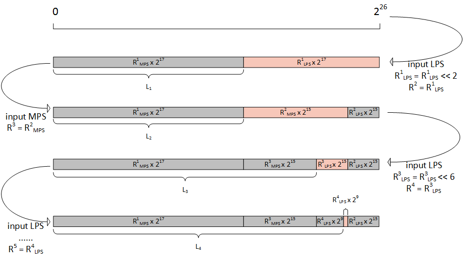
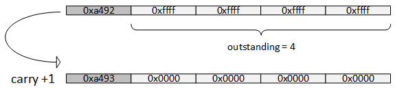
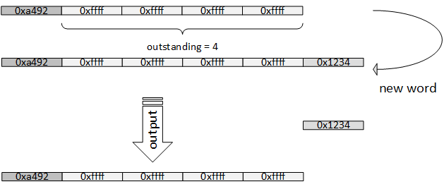

正文
- h.264的POC计算
- 指数哥伦布编码
- h.264加权预测
- h.264码率控制
- h.264直接预测
- h.264 FMO
- h.264参考图像列表、解码图像缓存
- h.264 mvp求解过程
- UMHexagonS搜索过程
- h.264全搜索以及快速全搜索算法
- h.264 率失真优化
- EPZS搜索过程
- Intra Chroma Prediction
- Intra Luma Prediction
- H.264 Transform
- H.264 Quantization
- Quantization Method
- h.264 Mode Decision
- h.264 Bi-Predictive Motion Search
- h.264语法结构分析
- h.264宏块与子宏块类型
- h.264 scanning process for transform coefficients
- CAVLC
- CABAC
- 算术编码JM实现
- h.264并行解码算法分析
- h.264 去块滤波
- h.264并行解码算法2D-Wave实现（基于多核非共享内存系统）
- h.264并行解码算法2D-Wave实现（基于多核共享内存系统）
- h.264并行解码算法3D-Wave实现（基于多核共享内存系统）
- h.264并行熵解码
- CABAC总结与补充讨论
- ffmpeg h264并行解码
- ffmpeg h.264解码所用的主要缓冲区介绍

h.264标准中，CABAC的算术编码部分（9.3.4）只是一个参考，实际编码器中并不一定会按照它来实现，像JM中就有自己的算术编码实现方案。
在上篇文章CABAC中有详细的算术编码描述，在了解算术编码原理的基础上，下面分析JM18.6中的算术编码实现。
下图是JM方案编码的一个例子

结合上图的例子分析，JM的方案在下面几部分跟标准有差异
1. 初始化
把$[0,1)$用$[0,2^{26})$来表示，其中有9个bit为$R$，也就是说在初始化时，有
$R \cdot 2^{17} = (R_{MPS}+R_{LPS})\cdot 2^{17} = 2^{26}$
void arienco_start_encoding(EncodingEnvironmentPtr eep,
unsigned char *code_buffer,
int *code_len )
{
eep->Elow = 0; // low
eep->Echunks_outstanding = 0; //count of consecutive 0xffff
eep->Ebuffer = 0; //store the word
eep->Epbuf = -1; // to remove redundant chunk ^^ count of bytes to output
eep->Ebits_to_go = BITS_TO_LOAD + 1; // to swallow first redundant bit //n = 16 + 1
eep->Ecodestrm = code_buffer;
eep->Ecodestrm_len = code_len;
eep->Erange = HALF; //0x1fe 510
}
2. 重归一化
当输入的是LPS时，会选择$R_{LPS}$作为下次进行符号编码的$R$，但是由于标准规定了$R \in [2^8,2^9)$，因此如果$R_{LPS}$小于$2^8$的话，需要对$R_{LPS}$向左移位。不同大小$R_{LPS}$需要移动不同的位数才能符号区间$[2^8,2^9)$，下面是$R_{LPS}$的范围对应的移位表格
$R_{LPS}$进行左移，意味着作为增量的$2^{n}$需要减去相应的位，即
${R^{i}}{LPS} \times 2^n = ({R^i}{LPS}<<k) \times 2^{n-k}$
void biari_encode_symbol(EncodingEnvironmentPtr eep, int symbol, BiContextTypePtr bi_ct )
{
…
else //LPS
{
unsigned int renorm = renorm_table_32[(rLPS >> 3) & 0x1F]; //get k
low += range << bl;
range = (rLPS << renorm);
bl -= renorm; // n = n - k
if (!bi_ct->state)
bi_ct->MPS ^= 0x01; // switch MPS if necessary
bi_ct->state = AC_next_state_LPS_64[bi_ct->state]; // next state
if (low >= ONE) // output of carry needed
{
low -= ONE;
propagate_carry(eep);
}
if( bl > MIN_BITS_TO_GO ) // n > 0 ,no need to save a word yet
{
eep->Elow = low;
eep->Erange = range;
eep->Ebits_to_go = bl;
return;
}
}
…
}
当输入的是MPS时，会选择$R_{MPS}$作为下次进行符号编码的$R$，但是标准规定了$R\in [2^8,2^9)$，因此如果$R_{MPS}$小于$2^8$的话，需要对$R_{LPS}$左移，不过这里只需要左移一位，因为MPS出现的概率是大于等于0.5的，所以有$2^8 \leqslant 2 \times R_{MPS} < 2^{9}$。最后还需要对n减去1。如果$R_{MPS}$大于或等于$2^8$的话就不需要执行这一步了。
void biari_encode_symbol(EncodingEnvironmentPtr eep, int symbol, BiContextTypePtr bi_ct )
{
…
if ((symbol != 0) == bi_ct->MPS) //MPS
{
bi_ct->state = AC_next_state_MPS_64[bi_ct->state]; // next state
if( range >= QUARTER ) // no renorm
{
eep->Erange = range;
return;
}
else
{
range<<=1;
if( --bl > MIN_BITS_TO_GO ) // renorm once, no output //n = n - 1, n>0, no need to save a word yet
{
eep->Erange = range;
eep->Ebits_to_go = bl;
return;
}
}
}
…
}
3. 区间起点的计算方法
最终编码输出的是区间起点$L$，由上图可以看出，只有当输入符号位LPS时，L才会增大，有
$L_{i+1} = L_i + {R^i}_{MPS} \cdot 2^n$
在前面我们已经知道，随着编码的推进，$n$由17往0递减，当$n$为0时，由于$R$只有9bit，对于一共有26bit的$L$，除了进位之外，后面的计算是不会修改到$L$的高位17个bit的部分了。此时可以保存$L$高位的16bit。
保存下来的16bit数据可能会由于后续计算的进位而+1。需要注意的是，如果保存下来的16bit数据是0xffff，就会由于进位而溢出。解决方法是：每当需要保存的16bit数据为0xffff时，用一个计数器记录0xffff连续出现的次数，一旦碰到进位就把这些0xffff对应的位置置零，并且对它们前面的那个非0xffff的16bit数据+1

如果在连续出现的0xffff后并没有进位，而是接着保存非0xffff的16bit数据，这时就能将0xffff及其前面的数据一起输出

$L$的26bit数据中，剩下的10bit数据会被再次进行16bit的左移位（n=16），在下次编码符号时作为$L$继续处理。
void biari_encode_symbol(EncodingEnvironmentPtr eep, int symbol, BiContextTypePtr bi_ct )
{
…
else //LPS
{
low += range << bl;
…
if (low >= ONE) // output of carry needed
{
low -= ONE;
propagate_carry(eep); //process carry "+1"
}
...
}
…
//n = 0, save a word
//renorm needed
eep->Elow = (low << BITS_TO_LOAD )& (ONE_M1); //ONE_M1 = 2^26 - 1
low = (low >> B_BITS) & B_LOAD_MASK; // mask out the 8/16 MSBs for output //B_BITS=10
if (low < B_LOAD_MASK) // no carry possible, output now// B_LOAD_MASK=0xFFFF
{
put_last_chunk_plus_outstanding(eep, low); //low != 0xFFFF
}
else // low == “FF..”; keep it, may affect future carry
{
++(eep->Echunks_outstanding); //low == 0xFFFF
}
}
static forceinline void propagate_carry(EncodingEnvironmentPtr eep)
{
++(eep->Ebuffer); //+1
while (eep->Echunks_outstanding > 0)
{
put_one_word(eep, 0); //set 0xFFFF 0
–(eep->Echunks_outstanding);
}
}
static inline void put_last_chunk_plus_outstanding(EncodingEnvironmentPtr eep, unsigned int l)
{
while (eep->Echunks_outstanding > 0)
{
put_one_word(eep, 0xFFFF); //it is 0xFFFF, no carry would affect them
–(eep->Echunks_outstanding);
}
put_one_word(eep, l); //new word
}
欧长坤 © 2016-2025 版权所有， 采用知识共享署名-非商业性使用-禁止演绎 4.0 国际许可协议许可，代码使用 MIT 协议开源。
如果你认为本书对你起到了帮助，可以资助作者。